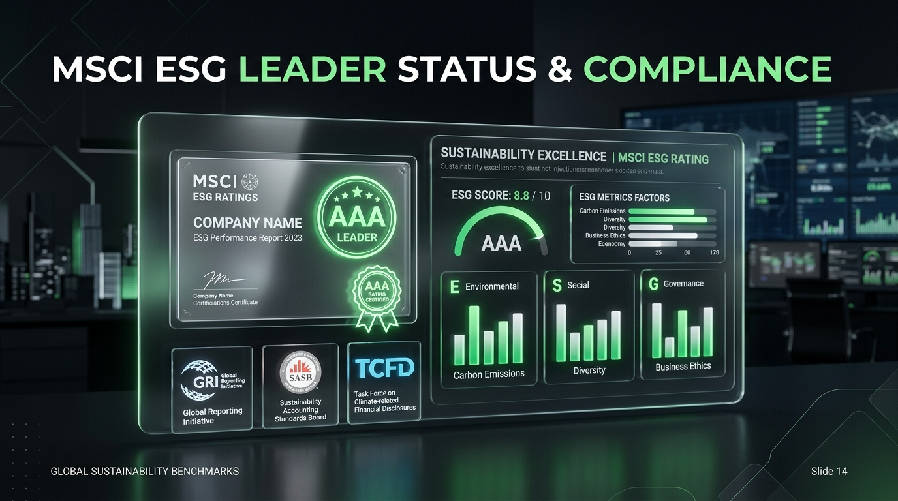

永續報告、ESG資訊揭露與企業透明度 Sustainability Reporting & ESG Disclosure
Sustainability Reporting, ESG Disclosure, and Corporate Transparency Sustainability Reporting, ESG Disclosure, and Corporate Transparency
GRI、ISSB (IFRS S1/S2)、SASB、TCFD 國際準則、Double Materiality 雙重重大性與 ESG 報告書實務 GRI, ISSB (IFRS S1/S2), SASB, TCFD Frameworks, Double Materiality, and Sustainability Report Audit Practice

課程邏輯主線：如何讓資本市場知道你的 ESG？ Course Thread: Communicating ESG to Capital Markets
W1-3 Ethics/CSR
倫理與責任Ethics & CSR
W4-5 ESG & E
ESG與淨零ESG & Climate
W6-7 S & G
社會與公司治理Social & Gov
W8 Today
Disclosure (揭露)
(永續報告與透明度)Disclosure
(Reporting & Standards)
暖身問題：ESG 做很好但從不公開，投資人會知道嗎？ Warm-up: Great ESG But Never Disclosed—Will Investors Know?
「做再多 ESG 善舉，若未經國際標準定量揭露與會計確信，在機構投資人眼中等同不存在！資訊揭露 (Disclosure) 是將永續行動轉化為資本估值與信任的唯一橋樑。」 "Undisclosed ESG is invisible to institutional capital. Disclosure bridges action to market valuation."
企業透明度與資本價值鏈 Corporate Transparency & Capital Value Chain
Disclosure
定量透明揭露ESG Disclosure
Transparency
企業資訊透明度Transparency
Trust
投資人市場信任Market Trust
Valuation
企業估值與成長Corporate Valuation
資訊揭露：合規成本還是核心競爭力？ Disclosure: Compliance Cost or Strategic Advantage?
吸引外資、降低融資利率與展現治理的頂級武器Weapon to Attract Funds & Lower Cost of Capital
將揭露視為合規成本的企業只做最低維護；主動提供高透明度報告書的企業，能獲得全球主權基金買進與銀行綠色融資利率優惠！ Proactive firms treat reporting as a strategic asset to attract global ESG funds and lower borrowing rates.
什麼是 Sustainability Report (永續報告書)？ What is a Sustainability Report?
企業溝通 E/S/G 非財務績效的官方權威文件Official Vehicle for Non-Financial ESG Performance
永續報告書是企業年度向利害關係人、投資人與大眾展示氣候目標、社會責任與公司治理成果的正式綜合報告。 An official publication communicating a company's environmental, social, and governance goals and achievements.
Annual Report vs. Sustainability Report vs. Integrated Report Comparing the Three Corporate Reports
| 比較面向Dimension | Annual Report (股東年報) | Sustainability Report (永續報告書) | Integrated Report (整合報告 IR) |
|---|---|---|---|
| 主要受眾Audience | 股東與金融分析師Shareholders & Financial Analysts | 多重利害關係人與社會大眾Multi-stakeholders & Society | 機構投資人與長線資本Institutional Long-term Capital |
| 核心焦點Core Focus | 歷史財務數字與損益Historical Financial GAAP Metrics | E/S/G 非財務績效與永續專案Non-financial ESG Impact & Goals | 財務資本與自然/社會資本融合Merging Financial & ESG Capital |
一份高品質 ESG 報告書的 4 大核心章節 Four Core Chapters of an ESG Report
CEO Message
CEO 承諾與願景宣示CEO Vision & Commitment
Material Topics
重大議題與利害關係人溝通Materiality & Stakeholders
ESG Performance
E/S/G 定量數據與目標Quantitative ESG Metrics
Assurance
第三方會計師獨立確信聲明Third-party Assurance Letter
CEO Message：高層承諾與願景 CEO Message & Tone at the Top
將永續目標納入企業核心營運戰略Integrating Sustainability into Strategy
CEO 致詞不應是公關稿，必須具體宣告 2030 減碳目標、2050 Net Zero 承諾與董事會監督機制，展現高層決心。 The CEO letter must explicitly declare 2030 decarbonization pathways and 2050 Net Zero targets.
Material Topics：重大議題鑑別 Identifying Material Topics
聚焦對商業與社會最具影響力的議題Focusing on Issues Impacting Value & Society
企業不可能包辦所有環保慈善專案！報告書必須揭露經過問卷調查與評估鑑別出的前 10 大重大性議題。 Reports must prioritize the top 10 material issues identified via rigorous stakeholder surveys.
Quantitative ESG Data (可量化數據) Quantitative ESG Performance Metrics
拒絕空洞文字，用真實數據說話Hard Data Over Vague Narratives
揭露 Scope 1, 2, 3 碳排放噸數、綠電百分比、水資源回收率、女性主管比率、員工工安失能傷害率與董事會獨立性。 Disclosing hard figures: Scope 1-3 metric tons, renewable energy %, female manager %, and safety incidents.
台積電永續報告書實務標竿 TSMC Sustainability Report Benchmark
整合 GRI, SASB, TCFD 與 ISSB 揭露典範Pioneering Integrated ESG Frameworks
台積電每年發布完整的永續報告書與 ESG 數據庫，率先導入 SASB 半導體指標與 TCFD 氣候財務揭露，並取得第三方獨立會計師查驗確信。 TSMC publishes comprehensive ESG databooks aligned with SASB semiconductor metrics and independent assurance.
Materiality Workshop Materiality Workshop
任務：為目標產業挑出最精準的重大議題Plot Materiality Matrix for Target Industry
1. 航空公司 (碳排/燃油效率/客安)
2. 銀行金融 (綠色融資/資安/氣候風險)
3. 科技半導體 (綠電水資源/晶片隱私/供應鏈)
4. 食品餐飲 (食品安全/有機採購/包材廢棄)
不同產業的重大議題本質差異 Activity 1: Industry Materiality Differences
教師觀點帶出 (Key Takeaway)：Faculty Debrief:
「重大性 (Materiality) 絕非套用公版！航空業的核心是 E (碳排)；金融業的核心是 G (風險與資安)；餐飲業的核心是 S (食安與供應鏈)。」 "Materiality is industry-dependent! Aviation focuses on E; Finance on G; Food & Retail on S & Supply Chain."
GRI (Global Reporting Initiative) GRI Standards
全球普及率最高的多重利害關係人揭露框架Most Widely Used Multi-Stakeholder Standard
GRI 涵蓋通用標準、行業標準與主題標準，著重企業營運對經濟、環境與社會產生的廣泛衝擊 (Impact Materiality)。 GRI covers universal, sector, and topic standards focusing on a firm's impact on society and environment.
ISSB (IFRS S1 與 IFRS S2) 國際永續準則 ISSB Standards (IFRS S1 & IFRS S2)
全球資本市場統一的投資人揭露基準Global Baseline for Investor Capital Markets
由國際會計準則理事會 (IFRS Foundation) 成立：IFRS S1 (永續相關財務揭露一般要求) 與 IFRS S2 (氣候相關揭露)，專為投資人提供財務重大性數據。 IFRS S1 & S2 create a global baseline of sustainability-related financial disclosures for capital investors.
SASB (77 個特定產業財務重大性) SASB Industry Standards
針對 77 個產業量身打造的精準財務指標Tailored Financial Metrics for 77 Industries
SASB 提供特定產業（如半導體、零售、金融）最具財務重大性的關鍵指標，幫助投資人進行橫向跨公司比較。 SASB provides industry-specific metrics for 77 sectors to help investors compare financial materiality across peers.
TCFD 氣候相關財務揭露 4 大柱石 TCFD 4 Core Pillars
1. Governance
董事會對氣候風險之監督Board climate oversight
2. Strategy
氣候情境分析與長遠策略Scenario analysis & plan
3. Risk
氣候風險識別與整合管理Risk management integration
4. Metrics
Scope 1-3 溫室氣體目標Scope 1-3 targets & metrics
CDP 全球氣候與水資源問卷 CDP Carbon & Water Ratings
機構法人最看重的全球氣候評級 (A to D-)Global Benchmark Rating for Fund Managers
評估企業在氣候變遷 (Climate Change)、水資源安全 (Water) 與森林防護 (Forests) 的揭露透明度與減碳行動。 Evaluating corporate transparency and action on climate change, water security, and deforestation.
全球 5 大 ESG 揭露準則綜合比較表 Global 5 ESG Reporting Standards Comparison
| 揭露準則Framework | 核心受眾Audience | 重大性視角Materiality Lens |
|---|---|---|
| GRI | 多重利害關係人 (社區/員工/NGOs)Multi-stakeholders | Impact Materiality (對環境社會的影響)Impact Materiality (Inside-Out) |
| ISSB (IFRS S1/S2) | 資本市場與機構投資人Capital Investors | Financial Materiality (財務重大性)Financial Materiality (Outside-In) |
| SASB | 特定產業投資人 (77 產業)Industry Investors | 特定產業財務重大指標Industry Financial Materiality |
雙重重大性 (Double Materiality) 概念 The Concept of Double Materiality
1. Impact Materiality (由內而外)
企業經營活動對外部地球環境與社會產生的衝擊與影響 (Inside-Out)。Inside-Out: How the firm impacts society and planet.
2. Financial Materiality (由外而內)
外部氣候變遷與社會風險對企業本身財務價值與股價的影響 (Outside-In)。Outside-In: How ESG risks impact financial value.
Materiality Matrix 重大性矩陣 The Materiality Matrix Diagram
矩陣座標定義：Matrix Axes Definition:
X 軸：對企業營運與財務之影響度 (Financial Materiality)
Y 軸：對利害關係人與社會之關切度 (Impact Materiality)
落在右上角第一象限的議題（如碳排、資安、供應鏈），即為永續報告書必須優先著墨的核心單元！
Top-right quadrant issues (e.g. Carbon, Cyber, Supply Chain) demand priority disclosure in the report.
評估 ESG 揭露品質的 5 大核心要素 5 Key Elements of Disclosure Quality
1. Balance
平衡性：揭露優點亦坦承缺點Balance: Good & bad impacts
2. Compare
可比性：跨年度與同業可對比Comparability: Year-on-year
3. Accuracy
準確性：方法學與數據精準Accuracy: Precise methods
4. Timely
即時性：年度定期公開Timeliness: Regular updates
5. Assurance
第三方獨立會計師確信Third-party assurance
Greenwashing vs. Disclosure Washing Greenwashing vs. Disclosure Washing
選擇性揭露好數據 (Cherry-picking) 的風險Cherry-Picking Metrics to Hide Negatives
Disclosure Washing 指企業在報告書中大量大張旗鼓宣傳少數環保亮點，卻刻意隱瞞罰款、勞資糾紛或工安天價天災。 Disclosure Washing occurs when reports highlight minor eco-projects while omitting severe labor abuse or pollution fines.
Volkswagen 柴油門與報告書漂洗 Volkswagen Dieselgate & Report Washing
永續報告書宣揚清潔柴油，實則作弊欺詐Clean Diesel Marketing vs Illegal Defeat Software
VW 曾在永續報告書中獲得全球高分，宣稱其柴油車極度環保，實則安裝作弊軟體規避檢驗。案例凸顯無第三方客觀會計確信的報告書風險！ VW marketed clean diesel in ESG reports while installing illegal defeat devices, proving the necessity of independent auditing.
ESG Report Reading Challenge ESG Report Reading Challenge
小組實務審查：閱讀目標企業最新永續報告書Audit Latest Report for Target Listed Firm
1. 台積電 (TSMC)
2. Apple
3. Microsoft / Unilever
4. Starbucks / 玉山金控
各組 5 分鐘簡報與揭露改善建議 5-Min Pitches & Disclosure Audit
教師點評：從閱讀者提升為審計批判者Transforming Readers into Critical Auditors
審查重點：企業是否精準對接 GRI/SASB/TCFD？重大性議題是否迴避關鍵爭議？是否有第三方獨立確信聲明書？ Auditing whether reports align with GRI/SASB/TCFD and include independent third-party assurance statements.
W1–W8 第一階段總整與 Homework 8 W1-W8 Phase 1 Synthesis & Homework 8
恭喜完成前半學期永續管理完整能力建構！Phase 1 Complete: Ethics to Disclosure
W1 Ethics → W2 Decision → W3 CSR/CSV → W4 ESG → W5 Climate → W6 Stakeholders → W7 Governance → W8 Disclosure！下週 W9 將開啟《永續金融與 ESG 投資》！ W1 Ethics → W2 Decision → W3 CSR → W4 ESG → W5 Climate → W6 Stakeholders → W7 Governance → W8 Disclosure! W9 opens Sustainable Finance!
Homework 8：永續報告書分析個案 (約 2,000 字)Homework 8: Report Audit Case (~2,000w)
下載一家上市公司最新永續報告書：分析概況、三項重大議題、E/S/G措施與準則對接 (GRI/ISSB/SASB/TCFD)、批判分析與三項改善建議。 Audit a listed firm's report: intro, 3 material topics, E/S/G actions, GRI/ISSB/SASB/TCFD standards, critical analysis & 3 recommendations.